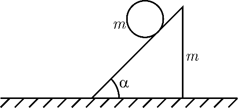

Y16 (2016) — English translation
On the horizontal surface there is a wedge of mass $m$ with an angle $\alpha=45^{\circ}$ at the base, on the wedge there is a hoop of the same mass $m$, radius $R$ (Fig. 1). The system is released without initial speed. At all points of the problem, we can assume that the hoop does not slip and the wedge does not tip over. The acceleration due to gravity is $g$.
On the horizontal surface there is a wedge of mass $m$ with an angle $\alpha=45^{\circ}$ at the base, on the wedge there is a hoop of the same mass $m$, radius $R$ (Fig. 1). The system is released without initial speed. At all points of the problem, we can assume that the hoop does not slip and the wedge does not tip over. The acceleration due to gravity is $g$.

Source: https://pho.rs/p/3029